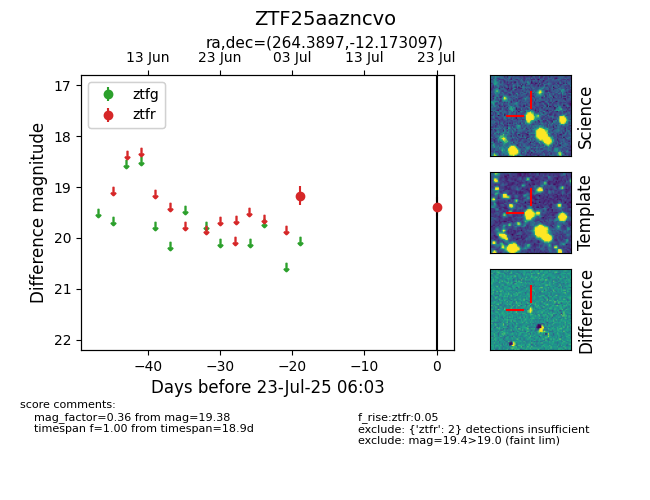

Target ZTF25aazncvo at 2025-07-23 12:37, see:
FINK: fink-portal.org/ZTF25aazncvo
Lasair: lasair-ztf.lsst.ac.uk/objects/ZTF25aazncvo
ALeRCE: alerce.online/object/ZTF25aazncvo
alt names
ZTF25aazncvo (ztf,fink)
coordinates:
equatorial (ra, dec) = (264.3897,-12.17310)
galactic (l, b) = (13.4017,+10.33835)
photometry
last ztfr=19.38
2 ztfr detections
